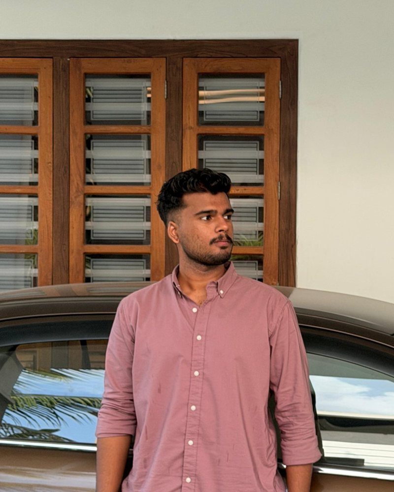

Open to work · Kerala, India
Hi, I'm Muhammed Shamil.
Odoo Developer & IT Support Engineer
I build business software on Odoo and Python, prototype blockchain ideas, and keep Windows and network setups running. Recent B.Tech IT graduate, ready for software, desktop support or system administration roles.

About me
I'm a B.Tech Information Technology graduate (MEA Engineering College, 2022 to 2026) who likes both sides of IT: writing the software and keeping the machines and networks under it healthy.
This year I completed an Odoo techno-functional internship at Odox Softhub, where I worked on Odoo customisation and the functional side of business workflows. I'm now developing an Odoo module of my own, using the ORM, relational fields, XML views and PostgreSQL.
Outside of Odoo, I run Windows Server virtual machines in my own lab, practise DHCP, DNS and NAT setups, and build projects around blockchain and social good.
- Education
- B.Tech, Information Technology
- Focus
- Odoo, Python, IT support
- Location
- Palakkad, Kerala, India
- Interests
- Enterprise apps, blockchain, networking
Skills
Odoo & Data
IT infrastructure
Projects
Counterfeit Medicine Detection with Blockchain
A blockchain-based system that checks whether a medicine is genuine. It pairs QR codes with DCT digital watermark verification and tracks each product through a secure pharmaceutical supply chain.
Food Redistribution System
A web application with a smart donation system that cuts food waste by connecting donors, NGOs and volunteers efficiently.
Windows Server & Networking Lab
A personal lab on Oracle VirtualBox: Windows Server VMs, user account management, IPv4 addressing, DHCP, NAT and host-only networks, and checking connectivity between machines.
More code on github.com/Shamilckl
Experience & education
Odoo Techno-functional Intern, Odox Softhub
Hands-on work in Odoo customisation and the functional side of business processes.
Participant, NASA Space Apps
Worked on solutions to global challenges in the space and technology sector.
Content Creator, XORIT
Wrote content on technology, development and design for the XORIT platform.
iOS App Development Workshop, Iplanet
Learned the concepts and tools behind mobile app development.
B.Tech Information Technology
MEA Engineering College, Perinthalmanna.
Higher Secondary Education
PTMYHSS Edappalam.
Let's talk
Hiring for an Odoo, software or IT support role, or have a project in mind? Email is the fastest way to reach me.